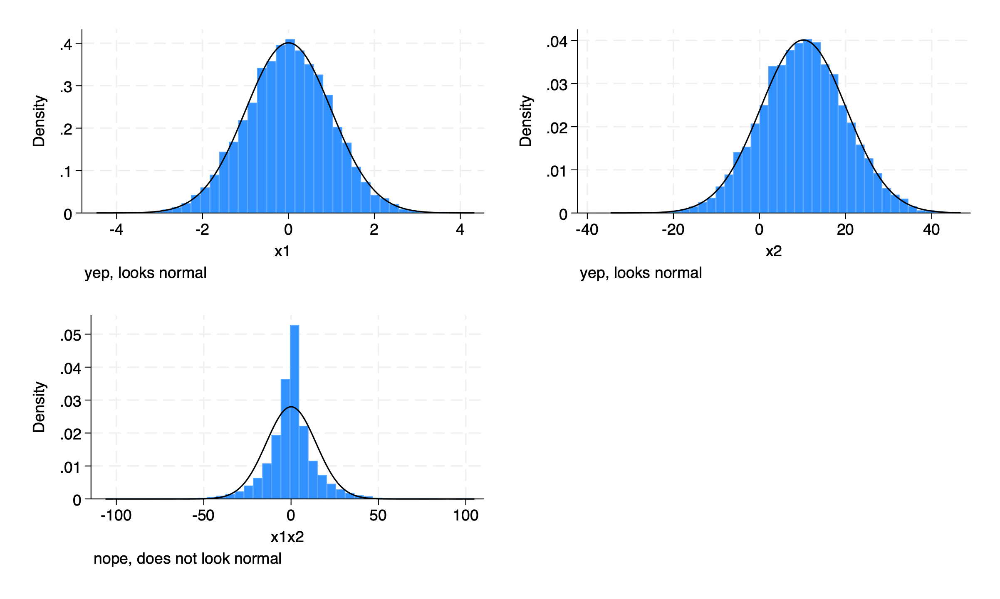

library(Statamarkdown)Stata found at /Applications/Stata/StataSE.app/Contents/MacOS/StataSEThe 'stata' engine is ready to use.library(Statamarkdown)Stata found at /Applications/Stata/StataSE.app/Contents/MacOS/StataSEThe 'stata' engine is ready to use.* product of two normally distributed variables
* setup
clear all // clear workspace
set scheme s1color // better scheme
set obs 10000 // 10000 observations
* create variables
generate x1 = rnormal(0, 1) // normal x1
generate x2 = rnormal(10, 10) // normal x2
generate x1x2 = x1 * x2 // product term
* graphs
histogram x1, normal name(graph1, replace) caption("yep, looks normal")
histogram x2, normal name(graph2, replace) caption("yep, looks normal")
histogram x1x2, normal name(graph3, replace) caption("nope, does not look normal")
graph combine graph1 graph2 graph3 // table of graphs
graph export graphs.png, replace // exportknitr::include_graphics("graphs.png")